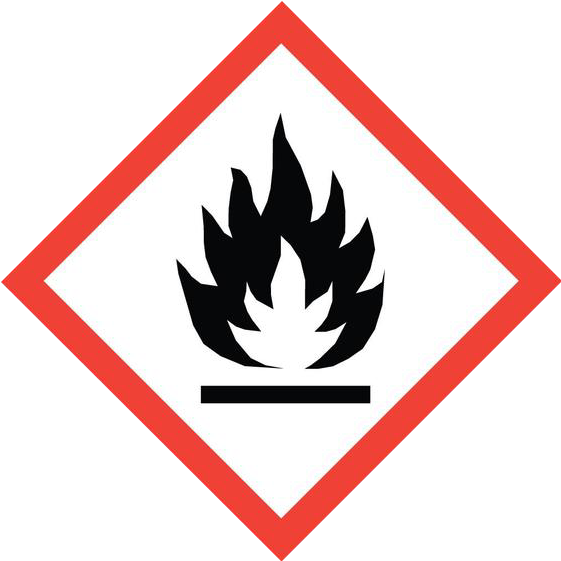
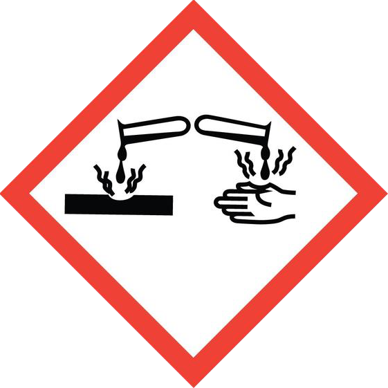
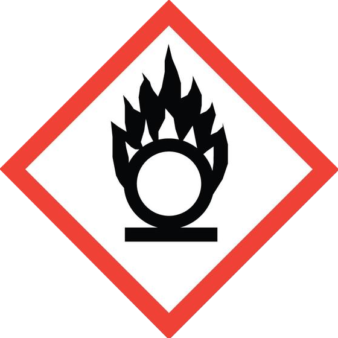
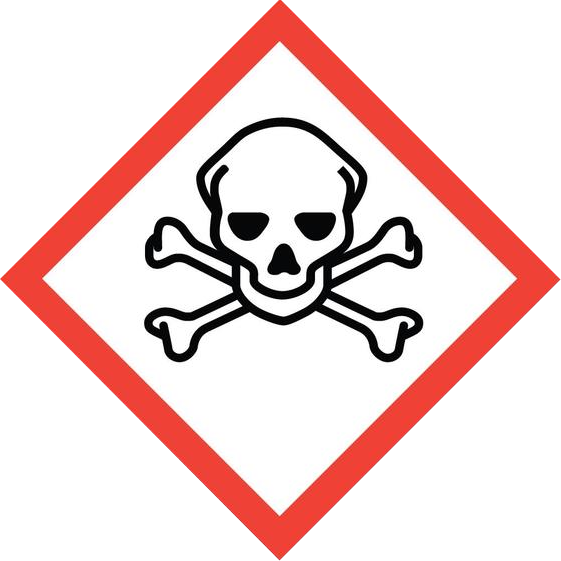
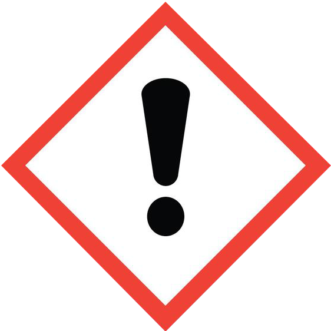

Classes de Perigo dos Reagentes
Baseado no GHS adotado pelo Brasil via ABNT NBR 14725 e ANVISA.

Inflamáveis e Combustíveis
Etanol, acetona, éter etílico, metanol, hexano. Ponto de fulgor abaixo de 60°C.
Classe 3: líquidos que se incendeiam em temperatura ambiente.
CLASSE 3 — GHS/ONU
Corrosivos
H₂SO₄, NaOH, HCl, HNO₃ concentrado.
Classe 8: destroem tecidos vivos por ação química. Bandejas de contenção obrigatórias.
CLASSE 8 — GHS/ONU
Oxidantes
KMnO₄, H₂O₂ concentrado, nitrato de amônio.
Classe 5.1: liberam O₂ e intensificam combustão. Ignição espontânea com inflamáveis.
CLASSE 5.1 — GHS/ONU
Tóxicos e Venenosos
Cloreto de mercúrio, cianetos, arsenito, compostos organofosforados.
Classe 6.1: causam danos graves ou morte em pequenas doses. Cofre + registro obrigatório.
CLASSE 6.1 — GHS/ONU
Ácidos (não corrosivos)
Ácido bórico, cítrico, acético diluído, fosfórico diluído.
pH < 7, sem atingir critérios da Classe 8. Incompatíveis com bases — reação exotérmica.
ÁCIDO / pH < 7Bases / Álcalis
NH₄OH, carbonato de sódio, bicarbonato, KOH diluído.
pH > 7. Reagem violentamente com ácidos. Bases fortes são também Classe 8.
BASE / pH > 7Biológicos / Radioativos
Material biológico, culturas, amostras clínicas. Área segregada.
Classe 6.2: agentes infecciosos. EPIs específicos, autoclave, RDC ANVISA 222/2018.
CLASSE 6.2 — GHS/ONUSólidos Inertes
NaCl, sacarose, amido, agar, sulfato de cobre anidro.
Não classificados pelo GHS nas concentrações de uso. Menor risco — identificar e vedar.
BAIXO RISCOMatriz de Incompatibilidade
Consulte a tabela ou use o verificador abaixo para checar dois reagentes específicos.
Digite dois reagentes para verificar se podem ser armazenados juntos.
| 🔥 Inflamável | ⚗️ Corrosivo | 💥 Oxidante | ☠️ Tóxico | 🧫 Ácido | 🔵 Base | 🧂 Inerte | |
|---|---|---|---|---|---|---|---|
| 🔥 Inflamável | ⚠️ | ❌ | ❌ | ⚠️ | ❌ | ⚠️ | ✓ |
| ⚗️ Corrosivo | ❌ | ⚠️ | ❌ | ⚠️ | ❌ | ❌ | ⚠️ |
| 💥 Oxidante | ❌ | ❌ | ✓ | ⚠️ | ❌ | ❌ | ✓ |
| ☠️ Tóxico | ⚠️ | ⚠️ | ⚠️ | ⚠️ | ⚠️ | ⚠️ | ✓ |
| 🧫 Ácido | ❌ | ❌ | ❌ | ⚠️ | ⚠️ | ❌ | ✓ |
| 🔵 Base | ⚠️ | ❌ | ❌ | ⚠️ | ❌ | ✓ | ✓ |
| 🧂 Inerte | ✓ | ⚠️ | ✓ | ✓ | ✓ | ✓ | ✓ |
- !Ácidos + BasesReação exotérmica violenta. HCl + NaOH: altamente perigoso se misturado acidentalmente.
- !Oxidantes + InflamáveisKMnO₄ + etanol = risco de ignição espontânea. Nunca na mesma prateleira.
- !Ácido Nítrico + Compostos OrgânicosRisco de explosão. Deve ser isolado de qualquer inflamável ou material orgânico.
- !Cianetos + ÁcidosLiberação de HCN, gás extremamente tóxico. Separação absoluta obrigatória.
- !Peróxidos OrgânicosInstáveis. Armazenar em local refrigerado, isolado, longe de calor e fontes de ignição.
Regras de Armazenamento
Checklist de conformidade com normas brasileiras de segurança química.
- Identificação completa
Rótulo com nome, concentration, data de abertura, validade, pictogramas GHS e frases H e P. Conforme ABNT NBR 14725-4. - FDS acessível para cada reagente
Ficha de Dados de Segurança disponível física ou digitalmente. Conforme NR-26 e ABNT NBR 14725-2. - Bandejas de contenção
Ácidos, bases e líquidos perigosos em bandejas com capacidade ≥ 10% do volume total. - Temperatura e ventilação adequadas
Inflamáveis: local ventilado, longe de calor e faíscas. Fotossensíveis: frascos âmbar. - Estoque mínimo no laboratório
Grandes volumes ficam em almoxarifado específico. No lab, apenas o uso do dia/semana. - Controle de entrada e saída
Livro ou sistema digital. Substâncias controladas (ANVISA/PF) exigem registro especial. - Sinalização dos armários
Pictogramas de perigo fixados externamente, visíveis sem abrir o armário. - Aterramento elétrico (inflamáveis)
Armários de inflamáveis devem ser aterrados. Instalação elétrica ATEX na área. - Controle de vencimento e descarte
Inspecionar validade mensalmente. Descarte conforme CONAMA 358/2005. Nunca no esgoto. - EPI disponível antes das prateleiras
Jaleco, luvas e óculos acessíveis na entrada. Lava-olhos a no máximo 10 segundos.
- 🔒Precursores controladosAcetona, éter, HCl, KMnO₄ e outros exigem autorização e registro. Lei 10.357/2001.
- ❄️Reagentes com refrigeraçãoAnticorpos, enzimas: geladeira exclusiva para reagentes, nunca para alimentos.
- 💧Sensíveis à umidadeCaCl₂ anidro, hidretos: dessecador ou frasco bem vedado com sílica gel.
- ☢️Peróxidos formadoresÉter, THF, dioxano: datar abertura, usar em até 3 meses, testar com fita de peróxido.
Resumo FDS dos reagentes de maior risco considerando co-armazenamento em paredes distintas da mesma sala. Clique para expandir cada ficha.
Normas Brasileiras Aplicáveis
Regulamentações que regem armazenamento e manuseio de reagentes no Brasil.
Produtos Químicos — Segurança, Saúde e Meio Ambiente
Define requisitos para rotulagem e FDS de produtos químicos, adotando o GHS. Partes 1 a 4 cobrem terminologia, FDS, rotulagem e pictogramas.
Sinalização de Segurança
Estabelece sinalização de segurança em ambientes de trabalho, definindo cores e símbolos para produtos químicos perigosos.
Armazenamento de Resíduos Sólidos Perigosos
Condições exigíveis para armazenamento de resíduos sólidos perigosos para proteção da saúde pública e meio ambiente.
Gerenciamento de Resíduos de Saúde
Regula boas práticas de gerenciamento dos resíduos de serviços de saúde, incluindo reagentes de laboratório clínico.
Controle de Precursores Químicos
Controle e fiscalização de produtos químicos que possam ser destinados à elaboração de entorpecentes. Regulamentada pela ANVISA e Polícia Federal.
Tratamento e Disposição de Resíduos
Tratamento e disposição final de resíduos dos serviços de saúde, incluindo reagentes e produtos químicos descartados.
PGR — Programa de Gerenciamento de Riscos
Substituiu o antigo PPRA (NR-9). Obrigatório para laboratórios mapearem os riscos químicos, físicos e biológicos através do Inventário de Riscos e Plano de Ação.
- Faça o inventário completo de todos os reagentes
- Solicite as FDS de cada produto ao fornecedor
- Classifique cada reagente conforme GHS/ABNT NBR 14725
- Aplique a matriz de incompatibilidade para definir a disposição
- Sinalize cada armário com os pictogramas corretos
- Treine a equipe e mantenha o PGR atualizado (NR-1)
Planta do Almoxarifado
Toque numa parede para ver suas 6 prateleiras. P1–P3 acesso fácil · P4–P6 requer escada
CIRCULAÇÃO
Reagentes que não devem ser armazenados diretamente acima/abaixo ou lado a lado entre si — mesmo que pertençam à mesma prateleira ou muro adjacente.
- P1Base — fácilItens pesados, perigosos, concentrados. Mais seguros na base: queda = menor risco de respingo alto.
- P2Cintura — fácilUso frequente com risco moderado.
- P3Olhos — fácilUso diário, menor periculosidade.
- P4Acima dos olhos 🪜Itens leves, uso ocasional. Nunca ácidos/bases concentrados aqui.
- P5Alta 🪜Reservas leves, itens de uso raro.
- P6Topo 🪜Estoque de reserva, frascos vazios limpos.
O que é o Número CAS?
Identificador universal de substâncias químicas mantido pela American Chemical Society.
Pesquise pelo nome comum, nome IUPAC ou fórmula química (com ou sem acento).
Identificador numérico único de substâncias químicas mantido pelo Chemical Abstracts Service (ACS). Funciona como o "CPF" de uma molécula — independente do idioma, país ou nome comercial.
O último dígito do número CAS é calculado a partir dos demais. Cada dígito (da direita para a esquerda, excluindo o verificador) é multiplicado pela sua posição (1, 2, 3…). A soma é dividida por 10 e o resto é o dígito verificador. Isso garante que números inventados ou digitados com erro sejam facilmente detectados.
Número sem o verificador: 64-17
Dígitos da direita p/ esquerda: 7, 1, 4, 6
7×1 + 1×2 + 4×3 + 6×4 = 7 + 2 + 12 + 24 = 45
45 mod 10 = 5 ✓ (dígito verificador confirmado)
FDS / MSDS
Toda Ficha de Dados de Segurança obrigatoriamente contém o CAS para identificação inequívoca do reagente.
Rastreabilidade
Permite localizar qualquer substância em bancos internacionais independentemente do nome comercial ou idioma.
Regulatório
ANVISA, Polícia Federal e Exército Brasileiro usam o CAS para controle de precursores e substâncias controladas.
Compras e Estoque
Evita confusão entre isômeros, formas hidratadas e nomes genéricos na hora de adquirir ou registrar reagentes.
- 1907Fundação do Chemical Abstracts ServiceA ACS cria o CAS para indexar publicações científicas e organizar o crescente número de substâncias descobertas.
- 1965Primeiro número CAS atribuídoO sistema de numeração é formalizado e começa a ser adotado por laboratórios, indústrias e órgãos regulatórios do mundo todo.
- 1980sAdoção globalReguladores como EPA (EUA), ANVISA (Brasil) e REACH (UE) passam a exigir o CAS como identificador oficial em fichas de dados de segurança (FDS/MSDS).
- HojeMais de 200 milhões de substâncias registradasO CAS Registry é o maior banco de dados de substâncias do mundo, com novos compostos adicionados diariamente.
Emergências Químicas
Procedimentos de primeiros socorros por classe de reagente. Ligue ANTES de iniciar atendimento se a exposição for grave.
- 🚫NÃO induzir vômitoSalvo orientação médica explícita — aspiração pulmonar pode ser fatal para solventes e corrosivos.
- 👕Remover roupas e EPIs contaminadosCom cuidado para não contaminar a própria pele. Ensacar e descartar adequadamente.
- 🚿Lavar com água corrente abundanteMínimo 15 min para pele, 20 min para olhos — usar lava-olhos quando disponível.
- 📋Levar a FISPQ ao atendimento médicoA Ficha de Informações de Segurança orienta o tratamento — nunca descarte a embalagem antes do atendimento.
- 📢Avisar a chefia/supervisor imediatamenteMesmo após primeiros socorros — todo acidente deve ser registrado e investigado.
🧰 Kit de Contenção — Manter disponível no laboratório
- 🧤EPI básico de emergênciaLuvas nitrila (vários tamanhos), óculos de proteção, avental resistente e máscara N95 — guardar fora do armário de reagentes, em local de acesso rápido.
- 🏖️Areia fina secaAbsorvente universal para a maioria dos derramamentos químicos. Nunca usar serragem (risco de ignição com oxidantes e inflamáveis).
- 🧪Bicarbonato de Sódio (NaHCO₃) a granelPara neutralizar derramamentos de ácidos. Manter pelo menos 500 g em frasco identificado e de fácil acesso.
- 🌿Ácido Cítrico ou vinagre diluídoPara neutralizar derramamentos de bases. Manter solução a 10% em frasco identificado.
- 🌡️Papel indicador de pH (fitas)Para verificar se a neutralização atingiu pH 6–9 antes do descarte no esgoto (faixa legal: 5–9, conforme CONAMA 430/2011 · CONAMA 357/2005). Obrigatório em qualquer procedimento de neutralização.
- 🫙Enxofre em póEspecífico para derramamentos de mercúrio metálico líquido (Hg⁰) — ex.: termômetros quebrados. Cobre o metal líquido formando HgS estável, reduzindo a volatilização. Não usar para sais de mercúrio sólidos (HgCl₂, HgO, HgI₂, HgSO₄) — nesses casos usar areia seca. Manter em frasco identificado próximo à área de mercuriais.
- 🗑️Sacos de resíduo duplos (vermelho/laranja) + identificaçãoPara recolher material absorvente contaminado. Etiqueta mínima: classe, composição, data, responsável.
- 👁️Lava-olhos e chuveiro de emergênciaTestar mensalmente o funcionamento. Devem ser acessíveis em até 10 segundos a partir de qualquer ponto do laboratório (NR-26).
🔥
Inflamáveis e Combustíveis
MODERADO
Acetona
Acetato de etila
Etanol
Álcool isopropílico
Metanol
Benzeno
Ciclohexano
Ciclohexanona
Éter de petróleo
N-Hexano
DMF
Clorofórmio †
🩹 Contato com a pele
Lavar a área afetada com água e sabão por no mínimo 15 minutos. Remover imediatamente as roupas e calçados contaminados.
Se houver queimadura química ou irritação persistente, encaminhar ao médico com a FISPQ do produto.
👁️ Contato com os olhos
Lavar com água corrente abundante por 15–20 minutos, mantendo as pálpebras abertas. Usar lava-olhos se disponível.
Consultar médico se houver irritação persistente, vermelhidão ou visão turva.
💨 Inalação de vapores
Remover a vítima imediatamente para local com ar fresco. Afrouxar roupas apertadas. Manter em repouso.
🚫 Ingestão
NÃO induzir vômito — solventes aspirados para os pulmões causam pneumonite química grave.
Ligar imediatamente para o CIATOX: 0800 722 6001.
🧯 Derramamento / Spill
Eliminar IMEDIATAMENTE todas as fontes de ignição da área (faíscas, chamas abertas, equipamentos elétricos em operação). Ventilar o ambiente.
Absorver com areia seca ou terra (nunca serragem — risco de ignição). Recolher em recipiente identificado para descarte especializado.
⚗️
Corrosivos — Ácidos Fortes
ALTO
H₂SO₄
HCl
HNO₃
🩹 Contato com a pele
Lavar imediatamente com água corrente abundante por no mínimo 20 minutos. NÃO neutralizar com base na pele — a reação exotérmica agrava a lesão.
Remover roupas contaminadas. Encaminhar ao médico para qualquer área afetada — lesões podem ser mais profundas do que aparentam.
👁️ Contato com os olhos
Lavar com água corrente por no mínimo 20 minutos ininterruptos — usar lava-olhos obrigatoriamente.
💨 Inalação de vapores
Sair imediatamente da área contaminada para ar fresco. HCl e HNO₃ geram vapores altamente irritantes para as vias aéreas.
🚫 Ingestão
NÃO induzir vômito — causa queimaduras graves no esôfago na subida. Dar 50–100 mL de água para diluir.
Acionar CIATOX (0800 722 6001) e SAMU (192) imediatamente.
🧯 Derramamento / Spill
Usar EPI completo obrigatoriamente: luvas de neoprene, óculos de proteção, avental resistente a ácidos.
H₂SO₄ concentrado: cobrir imediatamente com areia seca para absorção e contenção física — NÃO aplicar NaHCO₃ diretamente sobre o ácido concentrado (reação exotérmica intensa, com efervescência violenta e projeção de gotículas corrosivas). Somente após o ácido estar completamente absorvido pela areia, aplicar NaHCO₃ ao redor da área e lavar com água abundante.
HCl e HNO₃ diluídos: neutralizar com NaHCO₃ em pó aplicado lentamente até cessar a efervescência; absorver com areia; lavar com água.
🔵
Corrosivos — Bases Fortes
ALTO
NaOH
KOH
NH₄OH
🩹 Contato com a pele
Lavar com água corrente abundante por 20 minutos. NÃO neutralizar com ácido na pele.
👁️ Contato com os olhos
Lavar com água corrente por no mínimo 20 minutos. Atendimento médico obrigatório.
💨 Inalação de vapores
Remover para ar fresco. NH₄OH libera vapores de amônia — irritação intensa das vias aéreas superiores.
Acionar SAMU (192) se houver tosse intensa, dificuldade respiratória ou queimação nas vias aéreas.
🚫 Ingestão
NÃO induzir vômito. Dar 50–100 mL de água para diluir. Acionar CIATOX e SAMU imediatamente.
🧯 Derramamento / Spill
Para bases diluídas: neutralizar com ácido cítrico diluído ou solução de ácido acético a 5% (p/v) — não usar vinagre (composição variável, inadequado como reagente de segurança conforme NR-26). Absorver com areia. Lavar com água.
Para bases concentradas (NaOH/KOH): EPI obrigatório; empresa especializada para grandes volumes.
💥
Oxidantes
ALTO
KMnO₄
H₂O₂
K₂Cr₂O₇
Cromato de Potássio
Hipoclorito de Cálcio
AgNO₃
Persulfato de Amônio
Bromato de Potássio
Iodato de Potássio
Ca(NO₃)₂
NaNO₂
🩹 Contato com a pele
Lavar com água por 15 minutos. KMnO₄ mancha a pele de marrom-escuro (manganês — não tóxico por contato breve, mas concentrado causa queimadura).
👁️ Contato com os olhos
Lavar com água por 20 minutos.
💨 Inalação de vapores/poeiras
Remover para ar fresco. H₂O₂ concentrado e hipoclorito liberam vapores oxidantes irritantes.
Consultar médico se tosse persistente ou dificuldade respiratória.
🚫 Ingestão
Ligar para CIATOX (0800 722 6001) imediatamente.
🧯 Derramamento / Spill
NÃO misturar com matéria orgânica — oxidantes podem causar ignição espontânea.
KMnO₄: neutralizar com solução de ácido ascórbico ou tiossulfato de sódio até descoloração; absorver com areia.
AgNO₃: recolher o sólido ou solução em recipiente identificado — não lavar no esgoto (contaminação por prata; H410 — tóxico para organismos aquáticos). Nota: em concentrações de laboratório, o AgNO₃ atua principalmente como corrosivo e tóxico (H290, H314, H410), não como oxidante significativo — o perigo dominante no derramamento é a corrosividade e a toxicidade, não a ignição.
Ca(NO₃)₂: oxidante comburente (H272) — NÃO misturar com matéria orgânica nem com solventes inflamáveis; pode provocar ignição espontânea do material. Recolher em recipiente identificado "NITRATO DE CÁLCIO — OXIDANTE".
NaNO₂: oxidante moderado e tóxico — NÃO misturar com ácidos (libera NO₂, gás tóxico laranja/marrom) nem com matéria orgânica. Recolher em recipiente identificado para empresa especializada. EPI obrigatório: luvas + óculos de proteção.
Lavar a área com água abundante após contenção de todos os oxidantes.
☠️
Tóxicos — Compostos de Mercúrio
EXTREMO
HgCl₂
HgO
HgI₂
HgSO₄
🩹 Contato com a pele
Lavar com água e sabão por 15 minutos.
👁️ Contato com os olhos
Lavar com água por 20 minutos. Atendimento médico obrigatório.
💨 Inalação de vapores
Sair imediatamente da área. Vapores de compostos de mercúrio são neurotóxicos acumulativos — danos neurológicos podem ser tardios.
🚫 Ingestão
NÃO induzir vômito. Ir ao pronto-socorro urgente. Ligar para CIATOX imediatamente.
🧯 Derramamento / Spill
Compostos sólidos de Hg (HgCl₂, HgO, HgI₂, HgSO₄): absorver com areia seca ou terra diatomácea (NÃO usar enxofre em pó — desnecessário para sais sólidos e não reduz o risco). Recolher com espátula em frasco de vidro hermético. Não varrer — usar pá e recolhedora descartáveis.
Mercúrio metálico líquido (Hg⁰) — ex. termômetros quebrados: cobrir com enxofre em pó para fixar o metal, formando HgS estável e reduzindo a volatilização. Recolher com espátula em frasco de vidro hermético de boca larga.
Área deve ser avaliada para contaminação residual por profissional habilitado após qualquer derramamento.
Ligar para o CIATOX (0800 722 6001) e acionar empresa especializada em resíduos de mercúrio (CONAMA 358/2005 · ABNT NBR 10004 Classe I).
☠️
Tóxicos — Cianetos e Azidas
EXTREMO
KCN
NaN₃
Nitroprussiato de Sódio
🩹 Contato com a pele
Lavar IMEDIATAMENTE com água e sabão.
👁️ Contato com os olhos
Lavar com água por 15 minutos. Acionar SAMU urgente.
💨 Inalação de vapores
Sair imediatamente da área. Acionar SAMU (192) urgente.
🚫 Ingestão
NÃO induzir vômito. Acionar SAMU (192) urgente.
🧯 Derramamento / Spill
Chamar equipe especializada. Neutralização de KCN com hipoclorito alcalino (NaOH + NaClO) deve ser feita apenas por profissional treinado.
NaN₃: empresa especializada obrigatória — não misturar com água quente ou metais pesados.
🧪
Tóxicos — Orgânicos e Outros
ALTO
Benzeno
Clorofórmio
Fenol
O-Toluidina
Meta-Arsenito de Sódio
Dithizon
Na₂S
🩹 Contato com a pele
Lavar com água e sabão por 15 minutos.
👁️ Contato com os olhos
Lavar com água por 20 minutos. Atendimento médico obrigatório para fenol, arsenito e O-Toluidina.
💨 Inalação de vapores
Remover para ar fresco imediatamente.
🚫 Ingestão
Acionar SAMU urgente para todos os reagentes desta classe. NÃO induzir vômito para benzeno e clorofórmio.
Arsenito de Sódio: pronto-socorro urgente — informar o reagente específico.
Mencionar sempre o reagente específico ao CIATOX (0800 722 6001) para orientação sobre antídotos.
🧯 Derramamento / Spill
Fenol: absorver com areia seca ou vermiculita (NÃO usar serragem). Recolher com espátula em recipiente hermético identificado para descarte por empresa especializada. NÃO neutralizar com bicarbonato de sódio — a efervescência do CO₂ gerado dispersa gotículas de fenol no ar; além disso, o fenolato de sódio formado (C₆H₅ONa) é igualmente tóxico, solúvel em água e de difícil confinamento. EPI completo obrigatório — luvas neoprene, protetor facial, avental de PVC.
Benzeno / Clorofórmio: eliminar fontes de ignição; ventilação máxima; absorver com areia; empresa especializada obrigatória.
Arsenito de Sódio: EPI completo; recolher sem dispersar pó; empresa especializada obrigatória — nunca lavar no esgoto.
🧫
Ácidos Não Corrosivos
BAIXO
Ác. Acético / Glacial
Ác. Bórico
Ác. Cítrico
Ác. Fórmico
Ác. Fosfórico
Ác. Salicílico
Ác. Ascórbico
Ác. Benzóico
Ác. Sulfanílico
🩹 Contato com a pele
Lavar com água corrente por 15 minutos. Remover roupas contaminadas.
Ácido fórmico em área grande: médico — é tóxico sistêmico em exposições significativas.
👁️ Contato com os olhos
Lavar com água por 15 minutos. Consultar médico se houver irritação persistente.
💨 Inalação de vapores
Remover para ar fresco. Vapores de ácido acético e fórmico são irritantes das vias aéreas.
Ácido fórmico em alta concentração: consultar médico.
🚫 Ingestão
Dar água (100–200 mL) para diluir. NÃO induzir vômito para ácido fórmico (tóxico sistêmico). Ligar para CIATOX (0800 722 6001). Leite: não oferecer sem orientação — o CIATOX avalia a conveniência caso a caso dependendo do reagente específico; não há recomendação universal de leite para ingestão de ácidos fracos.
🧯 Derramamento / Spill
Neutralizar com bicarbonato de sódio (NaHCO₃). Verificar pH com fita indicadora antes de lavar com água. Baixo risco ambiental em pequenas quantidades após neutralização confirmada (pH 6–9).
🔵
Bases Não Corrosivas
BAIXO
Ca(OH)₂
Carbonato de Sódio
Bicarbonato de Potássio
🩹 Contato com a pele
Lavar com água por 10 minutos.
👁️ Contato com os olhos
Lavar com água por 15 minutos. Consultar médico se irritação persistir.
💨 Inalação de vapores/poeiras
Ca(OH)₂ em pó pode irritar as vias aéreas superiores. Remover para ar fresco. Observação.
🚫 Ingestão
Dar 50 mL de água para diluir. Observar. Ligar para CIATOX se surgirem sintomas.
🧯 Derramamento / Spill
Neutralizar com solução de ácido cítrico diluído ou solução de ácido acético a 5% (p/v) — não utilizar vinagre (composição variável; inadequado como reagente de segurança conforme NR-26). Absorver o resíduo com papel absorvente ou areia seca. Verificar pH antes de lavar com água. Risco ambiental baixo em pequenas quantidades após neutralização confirmada.
🧂
Sais com Atenção
MÉDIO
NH₄Cl
Oxalato de Sódio
Sulfato de Cobre II
Sulfato de Ferro
Sulfato de Manganês
Nitrato de Prata
NH₄VO₃
CoCl₂
NiSO₄
🩹 Contato com a pele
Lavar com água corrente. Oxalato de sódio é irritante. Sulfatos de metais pesados (Cu, Mn, Fe): lavar por 10–15 min.
👁️ Contato com os olhos
Lavar com água por 10–15 minutos. Consultar médico se irritação persistir.
💨 Inalação de vapores/poeiras
Cloreto de amônio gera vapores irritantes quando aquecido. Oxalato e outros sais em pó: irritantes das vias aéreas superiores. Remover para ar fresco.
🚫 Ingestão
Cloreto de amônio: irritante — oferecer água; observar sintomas.
🧯 Derramamento / Spill
Recolher com EPI (luvas nitrila + óculos). Sais de metais pesados (Cu, Mn, Fe, Ag, Hg): jamais lavar no esgoto — recolher para descarte especializado.
Descarte de Reagentes
Procedimentos de segregação e descarte por classe. Referências: CONAMA 358/2005 · ANVISA RDC 222/2018 · ABNT NBR 10004.
- 🚫Nunca descartar no esgoto sem tratamentoResíduos perigosos no esgoto violam a PNRS (Lei 12.305/2010) e o CONAMA 357/2005 — sujeito a multa e responsabilidade penal.
- 🔀Nunca misturar classes diferentesMistura de resíduos pode gerar reações perigosas, inviabilizar o tratamento e encarecer o descarte.
- ⚗️Segregar: halogenados vs. não halogenadosSolventes halogenados (clorofórmio, DCM) e não halogenados (acetona, etanol) devem ser mantidos em bombonas separadas.
- 🏷️Modelo de etiqueta obrigatória para frascos de resíduoIncluir: RESÍDUO QUÍMICO | Classe: [NBR 10004] | Composição: [...] | Data de abertura: [...] | Responsável: [...] | Setor: [...] — afixar no frasco assim que iniciada a coleta.
- 🏢Empresa licenciada obrigatória para Classe I — solicitar MTRResíduos perigosos exigem empresa com licença IBAMA/SEMA. Exigir o Manifesto de Transporte de Resíduos (MTR) a cada coleta — guarda-lo por 5 anos (CONAMA 358/2005).
- 🌡️Verificar pH antes de qualquer descarte no esgotoUsar fita indicadora de pH ou pHmetro. Faixa legal: 5,0 a 9,0 (CONAMA 430/2011, Art. 16, que complementa o CONAMA 357/2005, Art. 34). Boa prática laboratorial: neutralizar até pH 6,0–8,0 para maior segurança. Só descartar após confirmação.